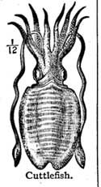

Christine Stewart
Working Note
In "The unsatisfactory state of science,"Francis Bacon writes this: [M]en's fair meditations, speculations and reasoning are a kind of insanity, only there is no one standing by to notice it. Taxonomies are a Kind of Insanity. There, Knowledge is a Hysteria of Order and Language is a Melancholic rivet of Border & Line. To stand By and Notice might Loosen, might Rust one Madness but only for the Crazy Steel of another. This is Mine.
Phantoms
(from Taxonomy)
|
 Phantoms of the Tribe: These phantoms are birds in the measure of your sedation. Birds in gladness of your astonishment. Birds in-aviary, perpendicular. Wheeling high and east, they branch, they dive—full-purple: mental & catalpa. Phantoms of the Cave: These phantoms are each other. Not neither. Not opposition in which is isn’t in matter. So sensation. Not volition but excretion Phantoms of the Market Place: These phantoms well from intercourse. Inculcating the walls of the jugular against equality, we give them their names: We say, mingle, we say, um-human, um-kindness um flock-collateral. Teaching the confusion of adore and the deep cuts of possible, these phantoms secrete milky and litigious tones. Just as the medieval axiom will besiege the mind, they command. Not minding, they abandoning. Phantoms of the Theatre: These phantoms are fragrant. Carefully observed. Seeing, not see. Frozen where nothing was nothing was never born, these phantoms are born in ten. Phantom three, were you ever among these? Even such a question probes the dark roses of my dark-lipped balcony—you know that trellis and ache. As if your letters were different. As if you float there floating there in some moaning shift—air or wind. Drunken & homeless. Wading homeless. But you are sharp blue edge under the fragments of translucent sleep. You beat against my manner of sleep. Falling always to the other side of tower, my phantoms you must move with any speed you please. | ||||||||||||||||||||||||||||||||||||||||
|
||||||||||||||||||||||||||||||||||||||||

|
Bio: Christine Stewart lives in Vancouver, British Columbia, Canada with Fenn, Haeden and Ruby. Sections from Taxonomy have been published in Raddle Moon, Exact Change, The Gig and a chapbook is forthcoming from West House Books.
|